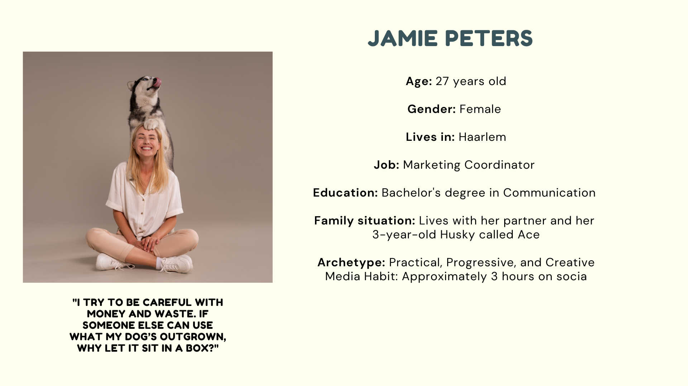
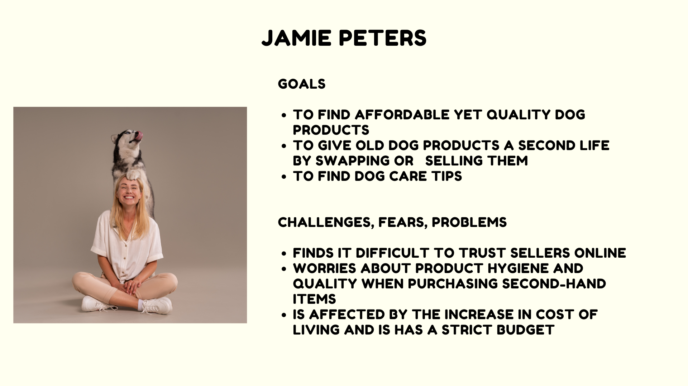
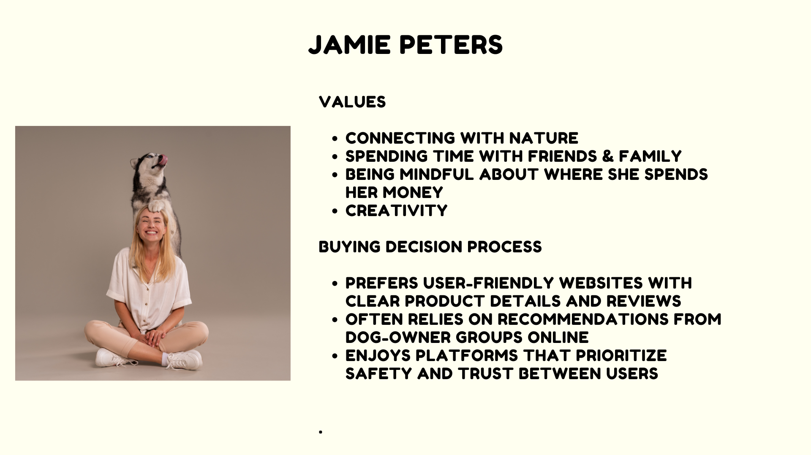
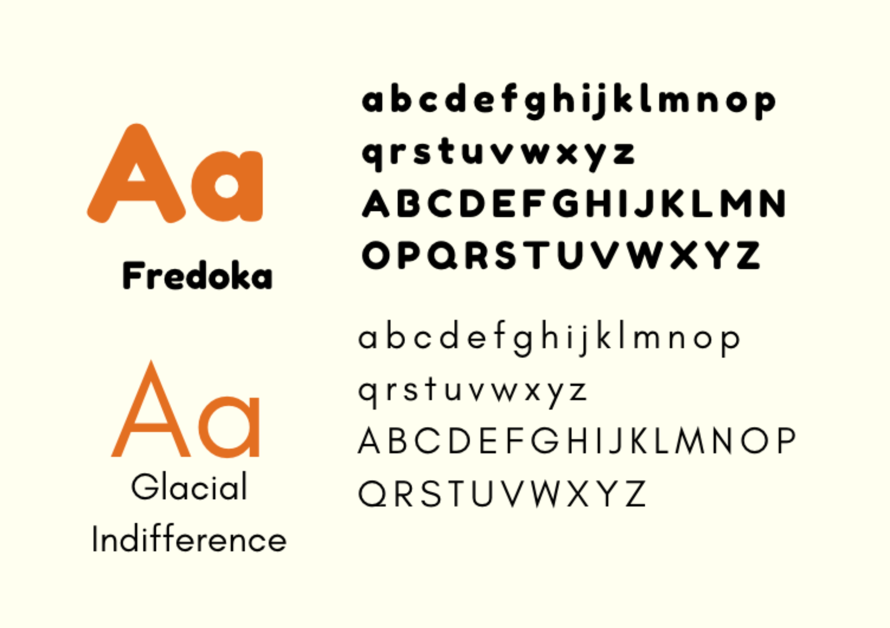
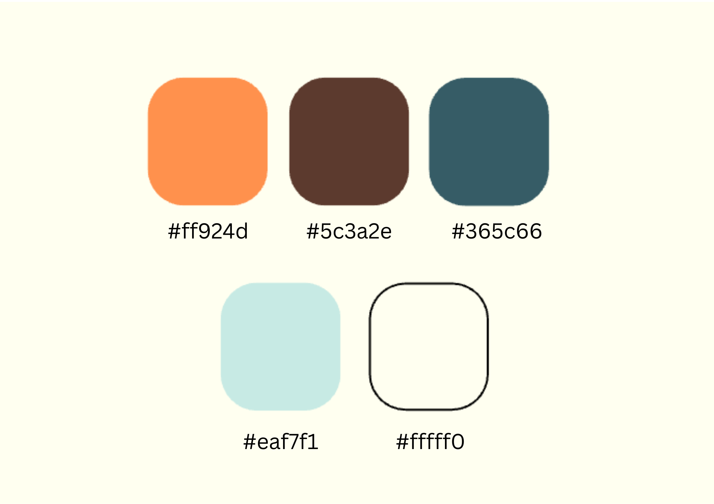

General Information
This branded website is publicly available at buas-media-interactive.github.io/my-website (please change text and hyperlink destination)
This website was created by… (only students listed below will be graded!)
- Student (ID: 247251)
- Student (ID: 234307)
- Student (ID: 247263)
- Student (ID: 231669)
- Student (ID: 234003)
Content
Please clarify here the match between students and pieces of content. Make sure that you provide a link to the correct page within the website
| # | Student ID | Value | Name and link of content |
|---|---|---|---|
| 1. | 247251 | Value | Content title |
| 2. | |||
| 3. | |||
| 4. |
Brand Name and Logo
Brand Vision
Our interviews revealed a common concern among dog owners: the rising costs of caring for their furry friends. Many feel the financial strain, as providing the best care for their dogs can quickly become expensive. Think about food, a dog bed, toys, and a leash. But do dog products really have to cost that much money?
Not at PawSwap! We offer the perfect platform to get tips on sustainable dog care, products for a low price and to connect with other dog lovers. A community platform where dog owners in The Netherlands can swap, buy or sell their dog products amongst each other instead of throwing them out or letting them sit in a cupboard for years!
We are passionate about dogs, dedicated to caring for them, and committed to making pet ownership easier and more convenient. As the cost of dog products continues to rise, we aim to help every dog owner provide the best care for their dogs while also being part of a supportive community.
Vision statement: PawSwap's vision is to be the Netherlands’ go-to platform for dog lovers, where sustainability meets connection through swapping, buying, and selling dog products.
Brand Values
Accessibility: PawSwap is designed as a welcoming platform that ensures every dog owner in The Netherlands can join, regardless of their circumstances. By providing an easy-to-use community platform, we make caring for dogs and accessing resources convenient for all users.
Affordability: Our brand vision emphasizes reducing the financial strain of dog ownership. PawSwap’s focus on low-cost products and the ability to swap or buy second-hand items directly ties to our commitment to helping dog owners care for their pets without having to overspend.
Sustainability: The idea of swapping, buying, or selling dog products promotes reusing items rather than tossing them out. This not only reduces waste but also aligns with earth-friendly methods that benefit the planet.
Community: Fundamental to PawSwap is the creation of a supportive network of dog lovers. By connecting people to share tips, exchange products, and bond over their shared love for dogs, we foster a sense of belonging and mutual support.
Transparency: The clear structure of our platform, where users can see and engage directly with others, reflects on our dedication to honesty and clear communication. This transparency builds trust and strengthens the bond within our community.
Brand Persona
Our target audience consists of passionate dog owners in the 20 to 30-year-old age range who are dedicated to providing the best possible care for their furry friends while embracing sustainable and eco-conscious practices, all within a supportive community of like-minded individuals.
After reviewing our interviews, we found common characteristics that ties our target audience together. We got a lot of insights in what it is that drove them into getting a dog, what their dog was like, and most importantly, what they’re struggling with. It was our goal to determine how we can support them in finding a solution to their struggles. We combined all the gathered information into one persona.
According to Van Helsdingen (2025) Dutch people between the age 20-39 (A little bigger than our actual target audience) use social media for approximately 147 minutes per day. Therefore, using our website should not be an issue for our target audience and they will likely have fun exploring all our features.
  Visual Identity and Supporting Visuals
Our goal is to create a website that projects friendliness and cheerfulness for every user. Friendliness means crafting a platform that is simple and intuitive, encouraging users to return and enjoy its ease of use. Cheerfulness reflects our desire to celebrate and support those who choose to shop second-hand, empowering them to make sustainable and thoughtful choices.
With an optimistic and warm atmosphere, we aim to foster a welcoming environment for our community through a carefully chosen colour scheme. We made use of many different colours, but colours that work well together. As for the visuals, there will be many pictures visible on our website, showing happy, satisfied dogs as a motivator for dog owners to become part of our community. Besides from the fact that a picture is worth a thousand words, we still want to include squares with written words. These could be tips, success stories and more.
We chose this font, because it looks playful because of its rounder shape. And the font is easy to read. It is definitely user-friendly!
The colours all have a meaning and purpose as well. The orange represents the warmth of our community, and the yellow represents something similar but even more cheerful, like a dog owner and their dog walking in the sun. The blue portrays trust. Blue is one of the primary colours, and a frequently used one. However, we decided to pick this specific kind of blue, because it is rarer and
Production
Design Elements
Please provide a list of design elements alongside their justifications:
-
A colour scheme (with HTML colour codes, which must be consistent with your final website)
— see the example below from the BUas brand book:
- #EE7622 The orange colour refers to the Dutch identity and the city of Breda (Oranjestad). Orange stands for…
- #00406B Dark blue signifies…
- Font choices
- User interface patterns (e.g. grids, carousels, menu organizations etc.)
- The structure of the navigation and content (e.g. how content units are distributed across pages)
- All these elements must be justified by referring to the theory and/or vocabulary of design
- Please relate these elements to other units, for example:
- How does website design fit the values and personality of the brand?
- How does website design fit the marketing and communication strategy?
- How does website design help showcase the unique value proposal of the product?
Credits
Please provide links and/or credits for third-party elements including:
- HTML templates if these are different from this one (buas-media-interactive/prj4-group-template)
- The source code for UX patterns other than the ones provided by the “Bootstrap” library (see getbootstrap.com/docs for a list of such patterns)
- Images that were not produced by students themselves, including when crediting is not mandatory (in other words, we ask you to credit Unsplash images)
Testing Report
Please write about…
- Your testing goals – in other words, what you are trying to learn about your website?
- Your testing methods, which includes information about:
- The test’s participants (number, match with target audience, etc.)
- The test’s setting (which material is used, is it done remotely, on campus, at home, etc.)
- The test’s protocol (what instructions are given, how it is recorded, etc.)
- Your testing results, which includes information about:
- Positive and negative aspects of the UI/UX that have been identified, ranked by importance.
- Improvements that have been implemented on the final website (or that would be implemented if doing so would be too complex)
Marketing
Context of campaign and promotional activities
With our marketing campaign, our primary goal was to increase engagement and spread awareness about Pawswap. Through our social media campaign, we aimed to reach our target audience of dog owners who value affordability, sustainability, and community. We used a combination of platform-specific content strategies, brand storytelling, and visually engaging posts to encourage interaction and build a loyal online presence. Our focus was on driving traffic, creating a sense of community, and promoting the unique value of second-hand and discounted dog products through Pawswap.
Objectives
We will posts 10 (including post on our feed and stories) initial posts talking explaing our concept as well as to gain and maintain engagement.
Reach
- By April 18th we aim to reach 121 different people through instagram.
This number was calculated based on our initial draft of the content calendar. However, after making edits to the calendar, we lost the original version. The number represents the expected total interactions from all 10 posts (both stories and post) in the original plan.
Affect
- By april 18th we aim for 121 people to feel a sense of collectiveness due to their mutal appreciation for their dogs
- We also want these 121 customers to feel cared for and reassured that they can be granted multiple options thanks to our service.
Response
- By April 18th we want to gain 30 Instagram followers and 6 comments in totel.
- By April 18th we aim to gain engagement and brand awareness.
Channels/Platforms
Our target demographic is 20–30 year old dog owners, especially Gen Z, who are active on Instagram, therefore we decided to leverage it for our social media campaign. According to interviews, this group struggles with the expenses of pet keeping and aspires to financial independence, which makes Instagram a perfect platform for brand interaction. LinkedIn (2024) reports that 67% of Gen Z uses Instagram for search, and 90% of Instagram users follow businesses (Koetsier, 2024). Instagram is a fantastic tool for creating a strong brand identity and successfully reaching our target audience because of its visual nature and high usage among younger consumers (Sprout Social, 2024).
Based on our target audience of 20–30-year-old dog owners and insights from our interviews, we selected Instagram as the primary platform for our content calendar. This decision is supported by several key factors:
- High Brand Engagement: According to LinkedIn (2024), 90% of Instagram users follow at least one business, showing the platform’s effectiveness for brand engagement.
- Popular with Gen Z: Instagram is widely used by younger audiences. Instagram is the most popular platform among users between the ages of 18 and 34, with 84% of social media users having an account (Sprout Social, 2024).
- Visual Appeal for Brand Identity: With Instagram being a visually heavy platform, it became the ideal platform for us to build a brand identity (Embryo, 2024)
- Search Behavior: According to Forbes, 67% of Gen Z users use Instagram for search purposes, especially for services, product reviews, and advice, making it a valuable platform for visibility and discovery (Koetsier, 2024).
(Influencer Marketing Hub, 2025)
Learning Points
Identify and justify your learning point (based on the Communication & Media Plan). What did you learn during the duration of the project concerning the campaign? What worked and what didn’t? What went as expected and what didn’t? What would you do differently? Reflect on the past work and describe what you learned.
Future Planning
Reflection on what has been done and describe in detail what you would do if the project would continue.
Describe in detail your future recommendations if the campaign would be continued.
Detail and describe clearly the process of what your would do differently based on you experience on this project related to the marketing assignment.
Professionalism
We tried to maintain our overall visual identity in all our posts and stories. Overall, the colors and fonts remained consistent throughout our Instagram page however there were still slight differences, such as some posts lacking visuals and purely being text heavy and some stories with copywriting that is hard to read due to the color. This was largely because of the lack of communication and collaborative decision making during the start of the project. However, we adapted as we went. We discussed clear visual ideas later down the line and tried to involve variety by adding graphics, organic shapes, and fun reels.
Management
Lean Canvas
.png)
.png)

Problem
Our Lean Canvas identifies three core problems:
- Rising costs of dog care: Dog expenses, especially unexpected ones, are increasingly taxing.
- Difficulty saving on dog products: Owners look for ways to spend less but still provide quality for their dogs.
- Financial sensitivity: Vet bills and surprise expenses strain budgets, especially for young or first-time dog owners.
These are well-aligned with the real pain points experienced by the age group from 20- to 30-year-olds, who are often just starting out their career, and don’t have it that well financially.
Solution
- A dedicated space to swap second-hand dog items, promoting reuse of products and affordability.
- Discounted dog toys, especially those deemed "error" items by brands but still perfectly usable.
- An interactive map that allows users to locate nearby items, reducing shipping and encouraging dog owners to start a community and have more engagement with one another.
Customer segments
The core target market includes:
- Dog owners aged 20–30, who are cost-conscious and active on social media.
- Individuals who want the best care for their dogs without breaking the bank.
- Users who value sustainability, affordability, community, and transparency.
The platform appeals to early adopters who are comfortable using digital platforms and care about ethical consumption
Unique value proposition
- "Our platform transforms dog ownership by combining affordability, sustainability, and community—offering a smarter, greener way to shop and swap pet products locally."
Unfair advantage
- Lower product pricing through brand partnerships and the swapping model.
- Sustainability embedded in the business model, making it appealing to eco-conscious consumers.
- A strong community-driven ecosystem where users not only transact but also interact and build trust.
- First-mover advantage in combining peer-to-peer swapping with brand collaboration in the dog care industry.
- Trust and engagement fostered by user reviews, map-based listings, and transparency of product history.
Channels
To reach and engage our audience, we leverage:
- Instagram: Our main tool for community building, awareness campaigns, and user engagement. We use it for storytelling, showing successful swaps, and featuring user testimonials.
- Website: The main platform for product listing, transactions, user registration, and map-based product search. Content marketing help drive traffic to the website.
Key metrics
- List the key numbers that tell you how your brand experience is doing.
- For example amount of users, downloads, visitors, subscriptions, sales etc. Numbers you are able to measure.
Revenue streams
- Brand Partnerships: Brands can list “error” dog toys or excess inventory on our platform for a fee or commission. Collaborative campaigns where brands get exposure to our user base.
- Website Advertisements: Targeted ads for dog products, services (e.g., grooming, vet care), and local pet events. Potential for affiliate marketing through curated product recommendations.
Cost structure
- Website Development and Maintenance: Includes front-end and back-end development, bug fixes, UI/UX improvements, hosting fees, and cybersecurity. Costs related to implementing features like interactive maps, user profiles, and secure transactions. .
- Calculate the cost per unit.
Services/products
- This project provides a platform for dog owners to swap and buy second-hand dog products, like toys and accessories. And it's not just a website—it’s a community-driven solution that supports sustainable consumption. A unique feature we offer is the interactive map that helps users find products nearby, which encourages local exchanges and lowers shipping costs. PawSwap reflects the values of affordability, accessibility, and community, and was shaped through insights from interviews with dog owners about their struggles with their own dogs.
Validation of Assumptions
Write a reflection on the choices made in creating choosing the trademark, including an analysis of the existing alternatives.
Appendix
Please use the list below to provide links to evidence for all parts of your justication. Please double-check all links before delivering the website. Do not hesitate to refer to these numbers above.